MakesenSelection
Musical Landscaping
Refined musical atmospheres for weddings,
banquets, private parties, and intimate events.


 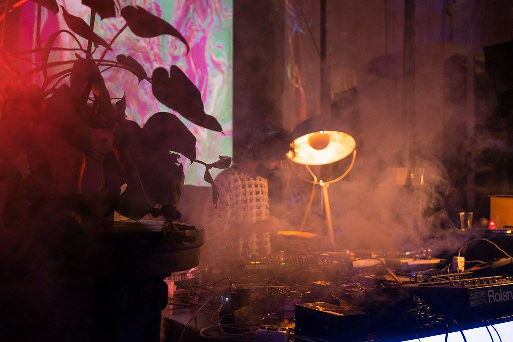
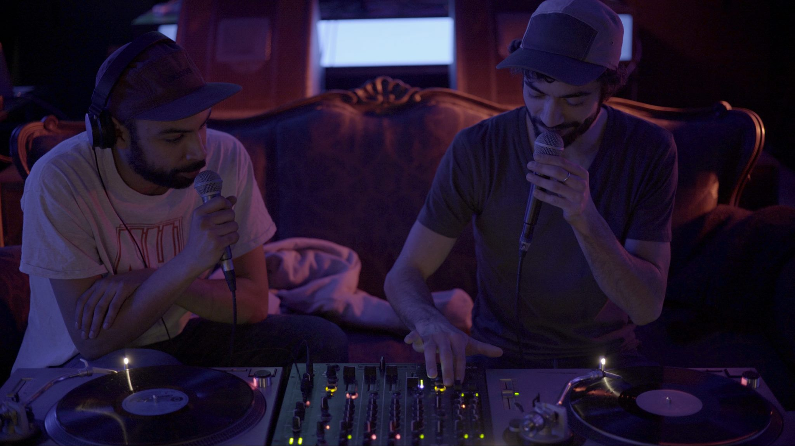
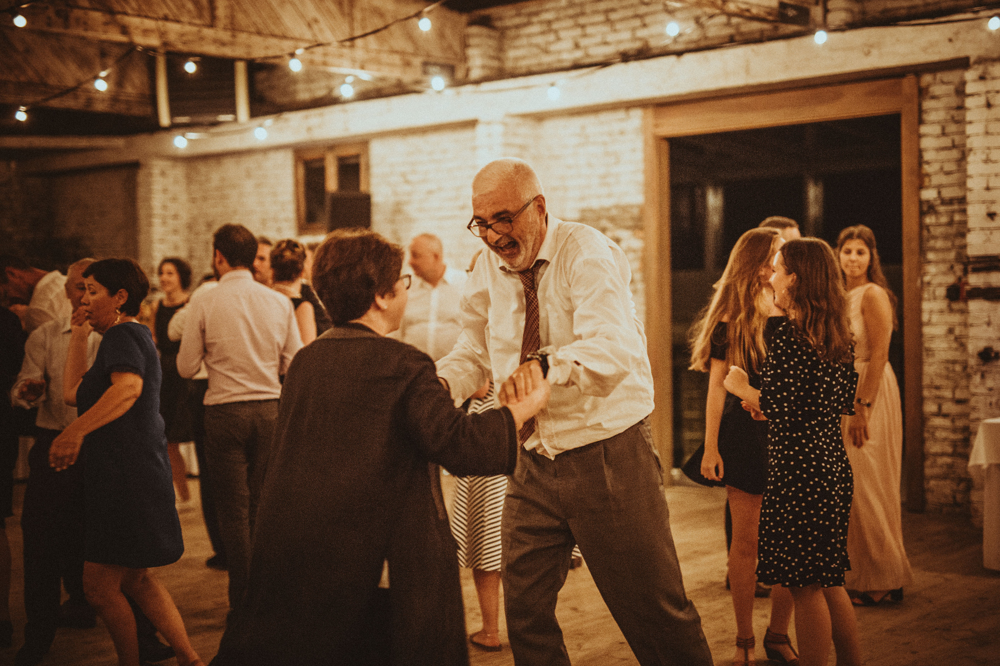
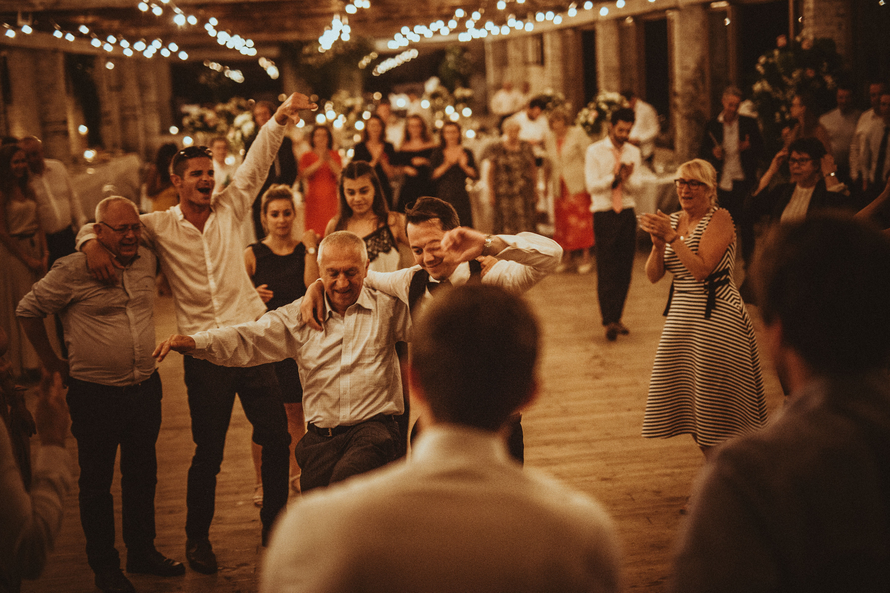
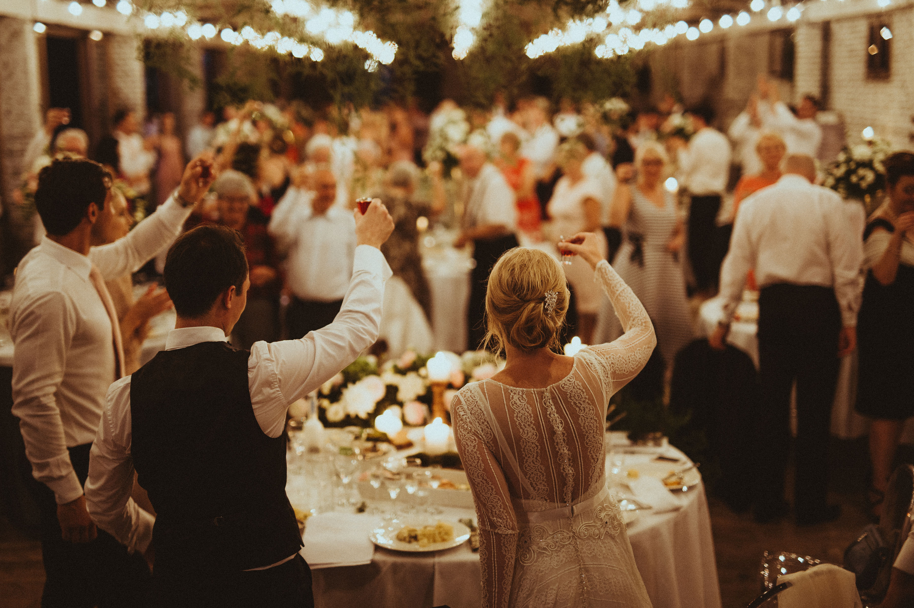
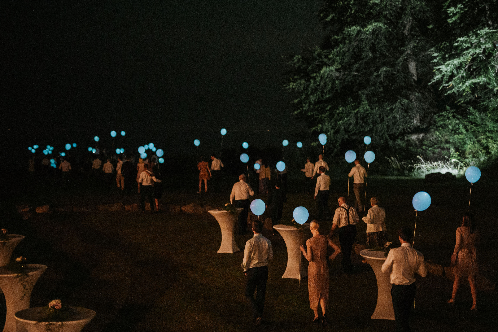
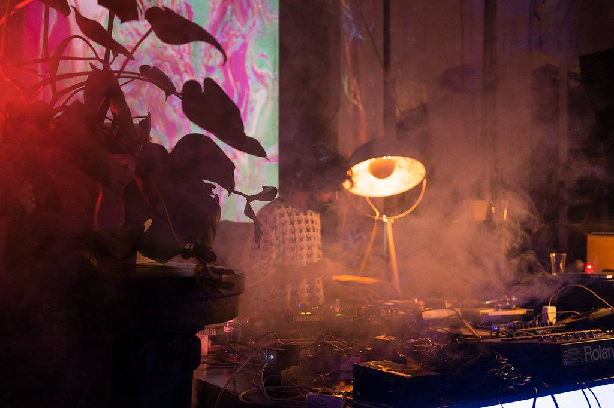
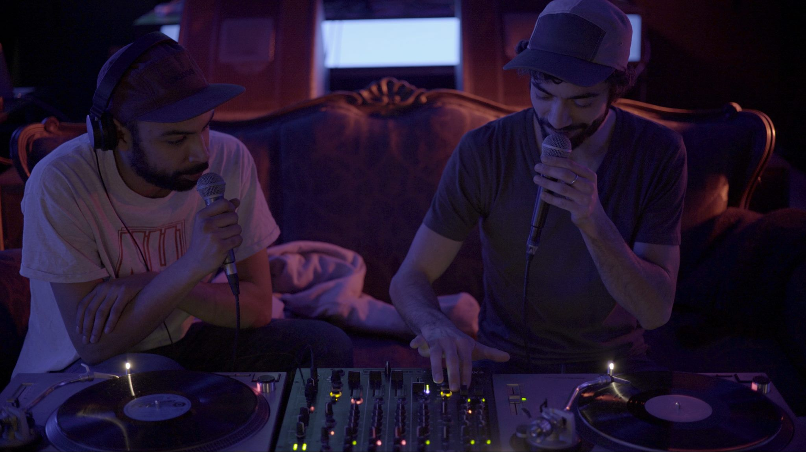
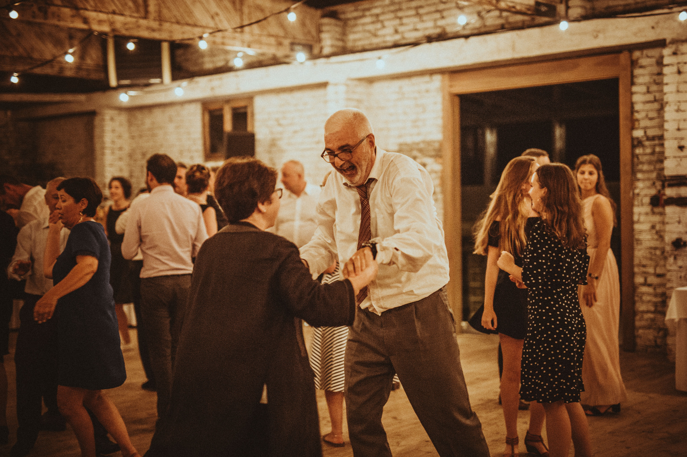
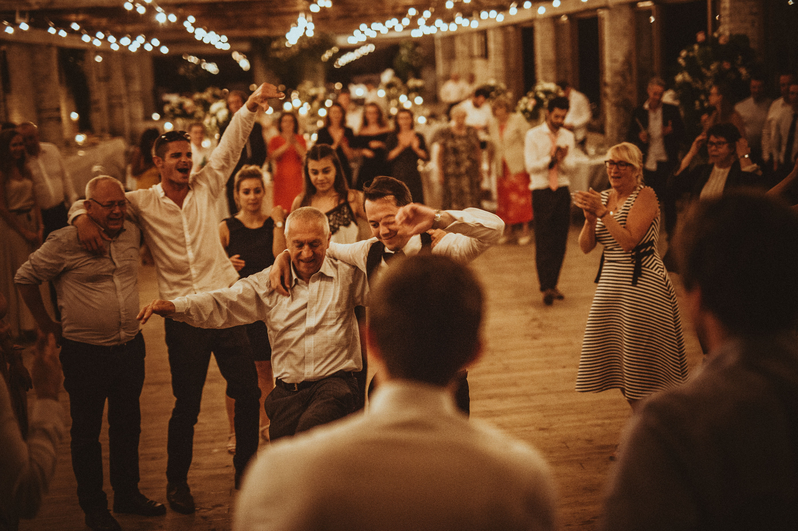
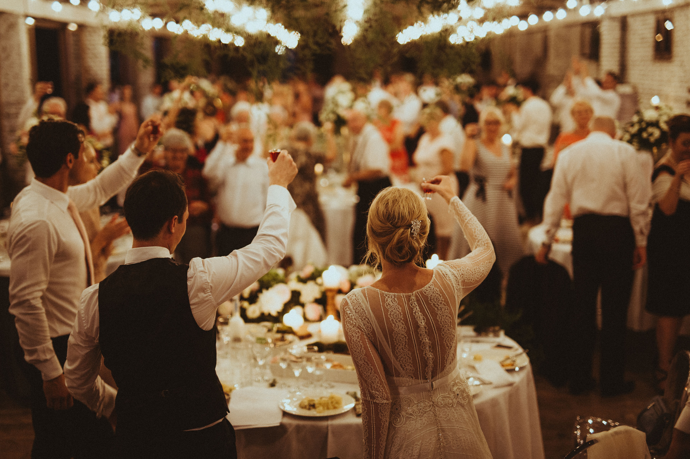
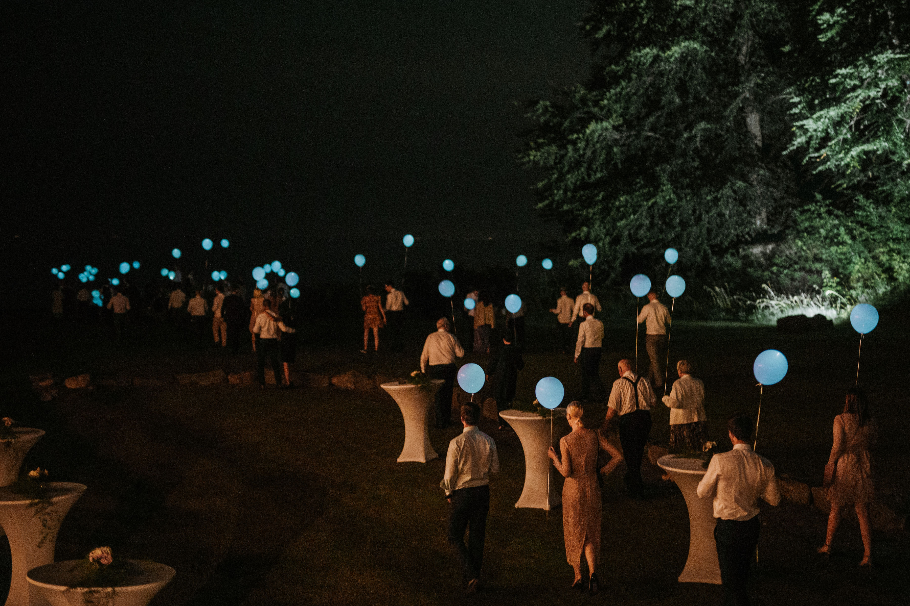
Eclectic, sensitive, and off-the-beaten-path selections: ambient, jazz, hard-lounge, soft rock, pop, soul & neo-soul, real hip-hop, disco, funk, New York house, Detroit techno, Afro-Brazilian rhythms, groove rarities, timeless gems and anthems of all kinds.
Each set is a story — a sonic journey that honors the moment, its rhythm, its own unique energy. No Top 50 of today’s commercial ugliness here, but cult tracks, well-known classics, forgotten treasures or unknown wonders, all chosen for their quality and power.
A music lover from an early age, I started spinning records at 18 on Radio Campus in Orléans, before moving on to my first gigs in a dancing bar in Annecy during my studies — a legendary spot that has since closed down.
Cradled by the French Touch (Daft Punk, Cassius, etc...), I was soon lured by the sirens of Berlin's underground, eventually opening a few club doors to play records. From radios to bars, clubs, festivals, pajama parties, and banquets — I adapt, always guided by a sense of quality and adventure.
Between elegance and warmth, between dance and contemplation: a musical aesthetic crafted to move both body and soul — from the cocktail hour to the afterparty :)
With nearly 15 years living abroad, including 10 in Berlin, a multicultural sensibility naturally developed, making it easy for me to feel right at home in these kinds of settings.
If you consider that music is a pivotal element within the magic of your event, then it is not a coincidence that you are currently on this internet page : )
- Musical performance with or without sound/light system.
- Optional Vinyl Bar for cocktails and dinner.
- Sound and music options for your ceremony.
- Aesthetically pleasing vinyl turntables.
- From 1100 Euros: party dj performance with equipment, until 4 a.m..
- Additional hour bookable.
- Get in touch for a personalized quote.
- Based in Lot (46), travel possible :)
FOR WEDDINGS